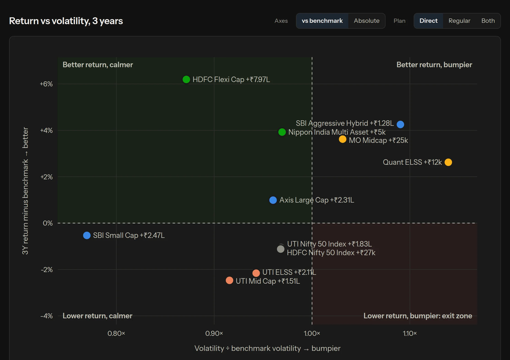
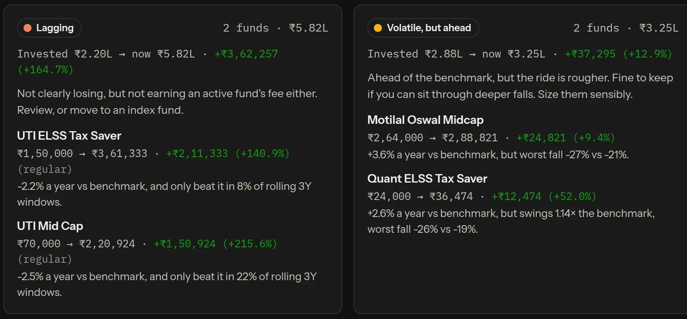
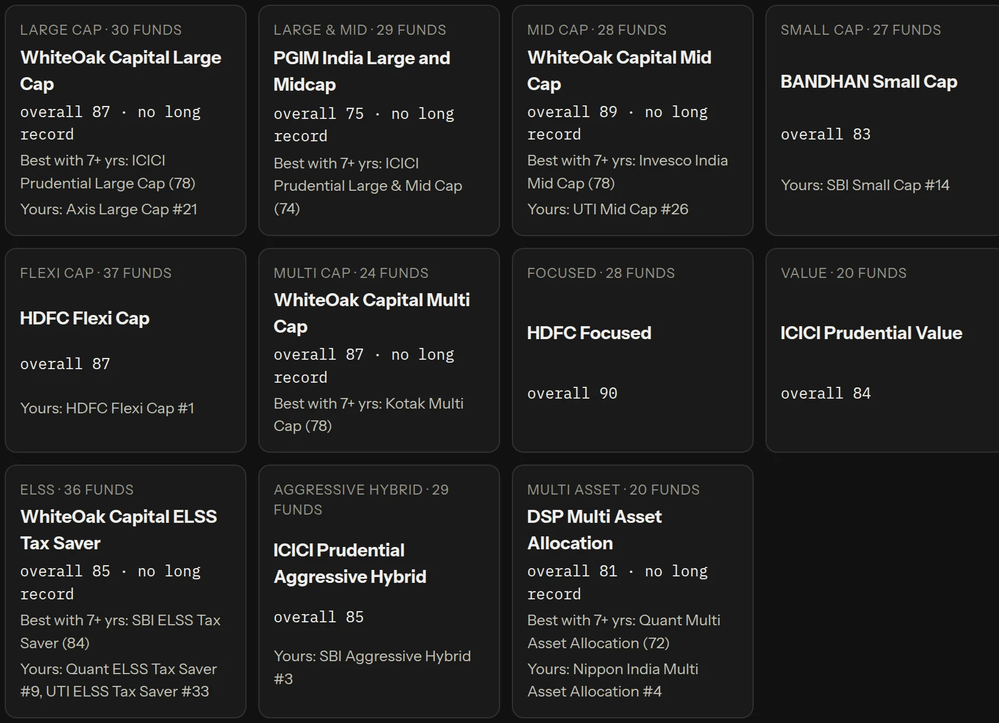
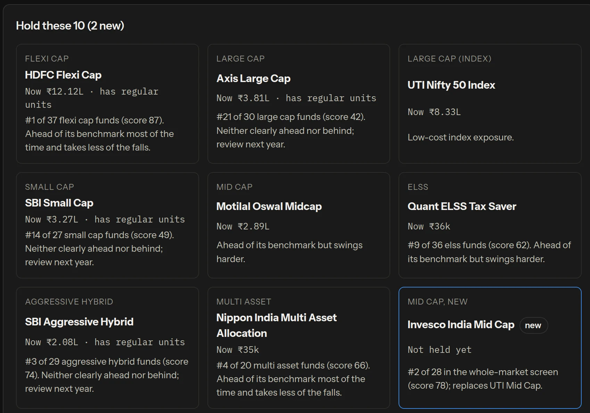
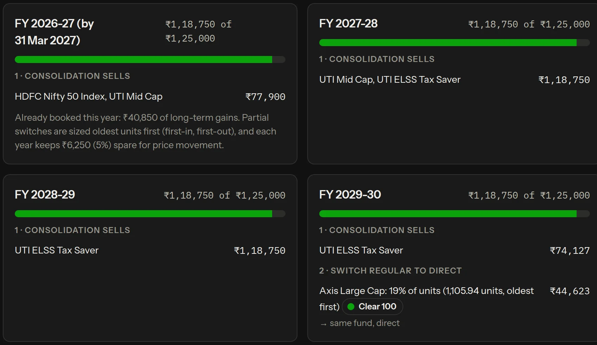
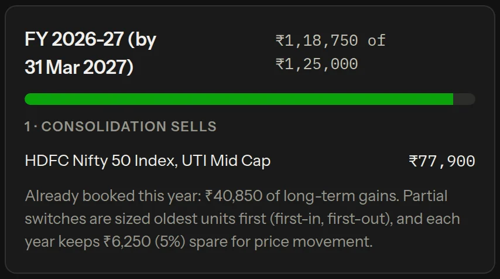

Which funds lag
Exit candidates, laggards, volatile but ahead, steady compounders and duplicate index funds, each with how often it beat its index. A peer check and a fund detail view sit beside them.
₹1,25,000
of long-term gains on equity funds and shares, tax-free each year
A Claude Code plugin that reads your CAS and plans your switches.
Three years of return and swing, for direct and regular plans.
Educational sample, not advice. Built by an individual investor to review their own portfolio and shared as an example. Not investment, tax or legal advice; the author is not a SEBI-registered adviser. Past returns don’t predict future returns.


Exit candidates, laggards, volatile but ahead, steady compounders and duplicate index funds, each with how often it beat its index. A peer check and a fund detail view sit beside them.

Every direct-growth fund in your categories from AMFI’s list (311 with three years of history), scored out of 100: 75% the last 3 years, 25% its record since 2018. The index fund is always an option.

Each move carries a case-for-change score from seven tests and a break-even time, so close calls show as close calls.

Four financial years ahead, oldest units first, only long-term and unlocked lots, inside each year’s room after gains you’ve already booked.
qpdf through an owner-only file.No accounts or API keys. MF Central’s Detailed CAS from inception works best; a CSV or INDmoney export also works.
| Tool | For |
|---|---|
| Claude Code | Running /analyse-mf |
| Python 3.10+ | The analysis, standard library only |
| pdftotext | Reading the CAS PDF |
| qpdf | Password-protected PDFs |
skills/mf-portfolio-analyser into ~/.claude/skills/git clone https://github.com/Alafazam/mf-portfolio-analyser python3 -m mfpa doctor
python3 -m mfpa run --cas ~/Downloads/cas.pdf
The same plugin builds a family money plan from ten questions. Run /plan-family.
Not advice. This is a rules-based screen an individual investor wrote for their own portfolio. Tax rules change and past returns don’t predict future ones. Check with a SEBI-registered investment adviser and a tax professional before acting. You run it on your own data, at your own risk.
